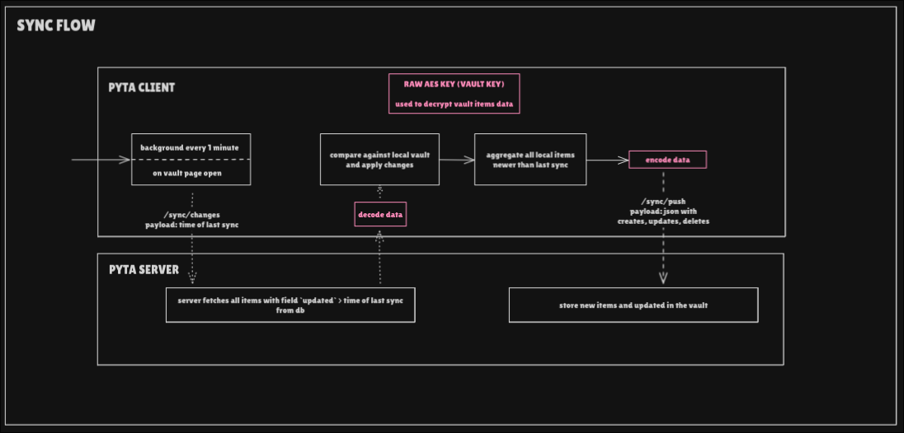

Sync API (/sync)¶
All sync endpoints are grouped under the /sync prefix.
Sync is used to synchronize encrypted credential storage between the client and server.

GET /sync/changes¶
Retrieve changes from the server since a specific cursor or timestamp.
Request¶
Query Parameters
cursor(optional): Resume from a specific pointsince(optional): ISO timestamp to fetch changes after
Response¶
Status: 200 OK
Body
{
"changes": [
{
"id": "uuid",
"username_data": "bytes",
"password_data": "bytes",
"domains": ["bytes"],
"notes": "bytes",
"created_at": "2026-01-01T00:00:00",
"updated": "2026-01-01T00:00:00",
"deleted_at": null
}
],
"next_cursor": "string",
"has_more": false
}
Behavior¶
- Returns all storage changes since the given cursor or timestamp
- Includes created, updated, and deleted items
- Supports pagination via cursor
- Requires authentication (session cookie)
POST /sync/push¶
Push local changes to the server (creates, updates, deletes).
Request¶
Body
{
"creates": [
{
"id": "uuid",
"username_data": "bytes",
"password_data": "bytes",
"domains": ["bytes"],
"notes": "bytes",
"updated": "2026-01-01T00:00:00"
}
],
"updates": [
{
"id": "uuid",
"username_data": "bytes",
"password_data": "bytes",
"domains": ["bytes"],
"notes": "bytes",
"updated": "2026-01-01T00:00:00"
}
],
"deletes": [
{
"id": "uuid",
"updated": "2026-01-01T00:00:00"
}
]
}
Response¶
Status: 200 OK
Body
{
"success_count": 5,
"conflict_count": 1,
"conflicts": [
{
"id": "uuid",
"reason": "server_updated_after_client"
}
]
}
Behavior¶
- Processes creates, updates, and deletes in a single request
- Detects conflicts using timestamps
- Returns conflict information for client resolution
- All data is encrypted client-side before transmission
- Requires authentication (session cookie)
Errors¶
| Status | Reason |
|---|---|
| 401 | Not authenticated |
| 409 | Conflict (see conflicts) |
Notes¶
- All credential data is encrypted on the client before sync
- The server stores only encrypted blobs
- Conflicts are resolved by timestamp comparison
- Multiple devices can sync to the same account